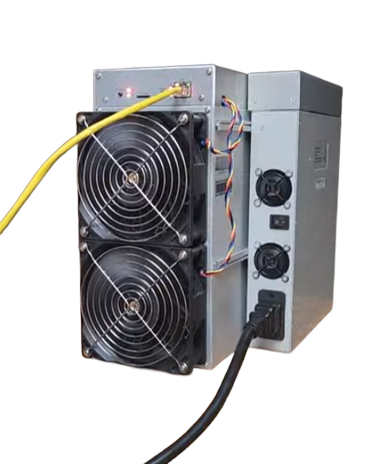

Projects
What I've built
Automation work from a twelve-month co-op on a production line, then projects of my own.
Industrial automation
12-month co-op · cellcentricPLC programs in Structured Text, operator HMIs on Beckhoff and Ignition, SQL integration, and a servo cabinet built from drawings. All of it ran on a live production line.
PLC Database Executor
A TwinCAT Structured Text program that builds XML from PLC data, calls SQL stored procedures and checks the response. Written as state machines, with an HMI for operators to see and retry failures.
Material Loss Tracking
A station-side HMI and database tool that recorded where and why material was lost. I owned it end to end, including operator training. Losses dropped 30%.
Line Temperature HMI
An Ignition screen for a water temperature-control unit: live piping mimic, sequencer step and trend charts, reading from a Siemens S7-300.
Servo Control Cabinet
A servo cabinet rebuilt from the electrical drawings, wired and labelled, installed in its machine and tuned with the integrator.
Personal projects
Startup, software, hardwareAlpine Charge
Self-serve phone charger kiosks at trailheads, under a municipal contract with the Village of Lions Bay. Founded in 2026 and operating.
Daemon Data
A Reddit monitoring platform on Firebase and Google Cloud. Shared scraping, user-built LLM prompts and a visual alert builder, with live demos.
Autonomous Driving
A Raspberry Pi robot taxi in a model city. I wrote the route planning, position tracking and fare selection.

Crypto ASIC
Ran a Kaspa miner at home for ten months, modelled resale value against future yield, and sold at a 200% return.